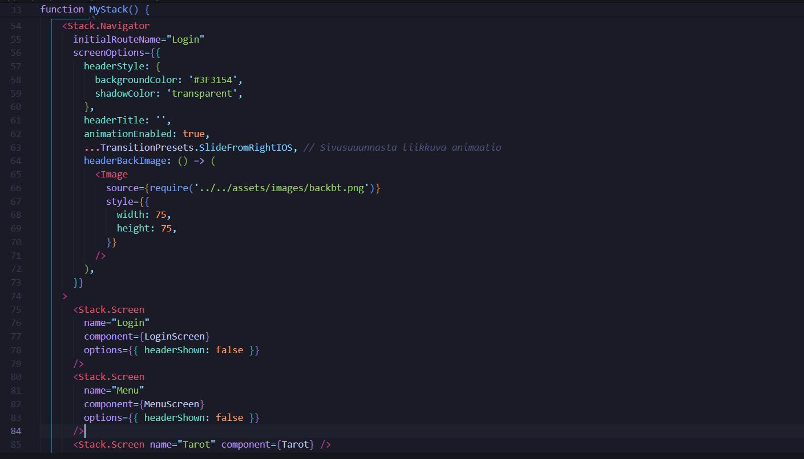
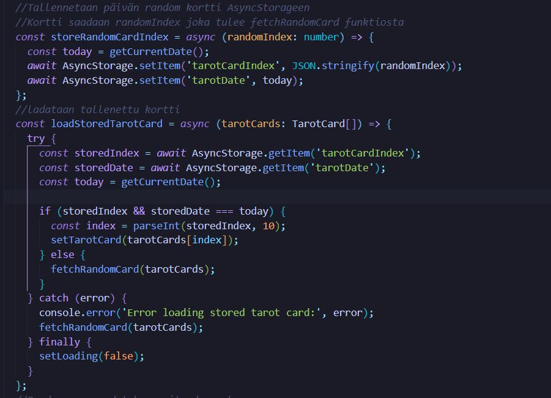
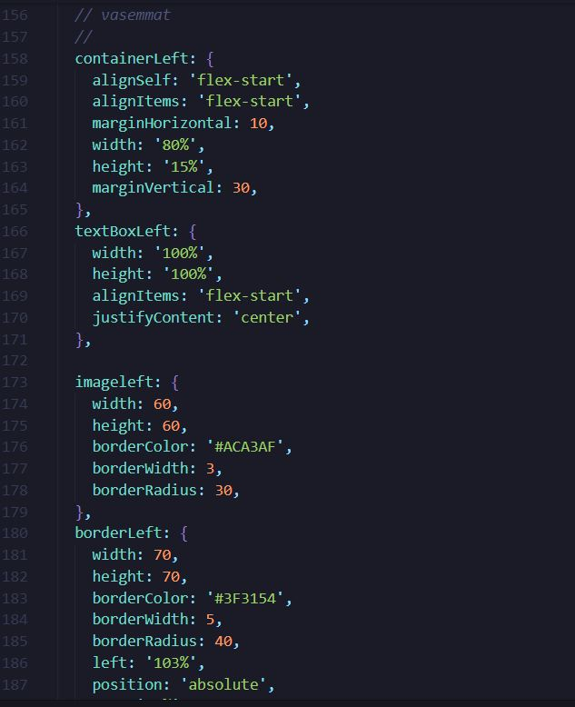

Mitä osasin alussa ja mitä tc:n jälkeen
-Kun kurssi alkoi halusin oppia lisää mobiili sovelluksien kehityksestä ja saada kokonaiskuva miten mobiili sovelluksia tehdään ja minkälaisia työkaluja on olemassa.
-Ticorporaten aikana opin todella paljon minkälaisia työkaluja on ja sain hyvän kuvan myös expon ja reactnativen käyttämisestä. Tutuksi tuli myös firebase vaikka sitä ei minun tullut käytetty sitä kovin paljoa. Koen myös että minun tiedon haku ja uuden oppiminen kehittyi todella paljon koska sitä tuli tehtyä todella paljon
Ohjelmointi
Ticorporatessa minun pääroolini oli ohjelmoija eli tuotin koodia sovellukseen.
-Ticorporaten alussa suuri osa ajasta meni siihen että ryhmäläisten kanssa koitettiin löytää oikea sovelluskehitysalusta joka vastaisi meidän tarpeisiin.
-Ensimmäisenä ehdotin ryhmälle että tehdäänkö pwa sovellus angularilla mutta todettiin että se ei ole meille oikea vaihtoehto. Seuraavaksi alettiin käyttämään svelte nativea. Svelte nativella kun alettiin tekemään aika nopeasti huomattiin että se on todella deprekoitunut ja että se ei oikeastaan toimi. Sen jälkee kuin päätettiin että etsitään vielä uusi framework jota käytetään. Aloin googlaamaan ja etsimään uusia työkaluja ja vastaan tuli react native jota sitten lähdettiin testaamaan ja todettiin että se toimii oikein hyvin ja siihen vielä löytyi todella paljon ohjeita ja muutenkin informaatiota mitä esim sveltestä ei löytynyt ja näin jälkeen päin koen että react native on todella hyvä alusta ja tykkäsin sen käytösta. Mutta olisi pitänyt jättää se expo pois välistä se auttoi alussa mutta loppu vaiheessa se tuotti todella paljon ongelmia
Navigaatio
Sovelluksen alussa tein meille navigaation reactin stack navigaattorilla joka vaikutti todella hyvältä ja sitä se olikin
Kuvassa näkyy osa meidän stack navigaattoria jossa oli todella kätevä ominaisuus jolla pystyi tehdä headerin joka menee sovelluksen joka näkymään ja sen sai myös helposti piilotetua
Tarot sivu
käytin myös paljon aikaa miedän tarot sivuun jossa luetaan päivän tarot kortti
Tässä kuvassa on osa miedän tarot sivua ja kuvassa näkyy osa koodia jossa käyttetään asyncstoragea jonne tallenetaan aiemmin arvottu tarot korrti ja vertaillaan aiempaa tallennusta joka varmistaa että näät yhdenkortin päivässä etkä aina saa uutta kortia kun aikaiset näkymän
Sivun ulkoasu
Sovelluksessa oli isossa roolissa ulkoasu meillä oli todella taitavat visuaaliset suunnitelijat ja muutenkin sovelluksen ulkoasu oli todella hieno
Tässä kuvassa näkee osan meidän sovelluksen tyylitiedosta Juurikin menu näkymän tyylitiedosta josta oli suht vaikea saada suunnitellun näköinen mutta ehkä pointtina tässä on se että käytin paljon aikaa sovelluksen ulkoasuun ja että se olisi suunnitelmia vastaava. ja muutenkin mukava käyttää. suunnitelin myös sitä että miten käyttäjän näkökulmasta on helppo soellusta käyttää ja että rakaisu ei ole sellainen joa vaikea toteuttaa koodaamalla
Yhteen veto
Ohjelmoinnin osalta minulla oli mobiilisovellus kehityksestä hämärä kuva mutta ticorporaten aikana sain todella hyvän kuvan miten mobiilisovelluksia tehdään opin käyttämään hyvin ractnativea ja koen että osaisin tehdä reacnativella jatkossain sovelluksia vaikka ne olisikin vähän monimutkaisempia
Markkinointi
A brief description of your project goes here.
scrum master
A brief description of your project goes here.
Testaus
A brief description of your project goes here.